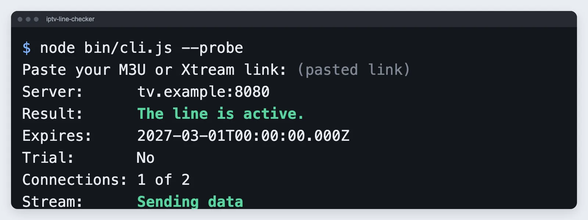
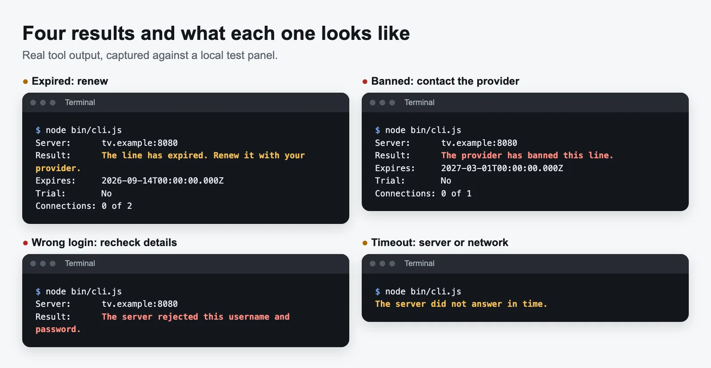
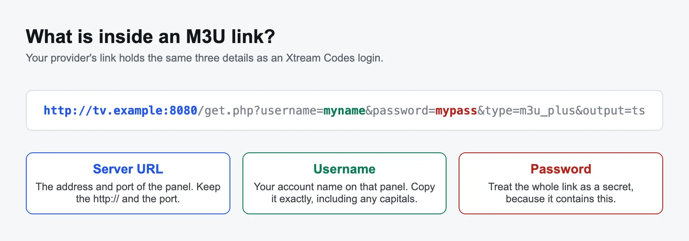
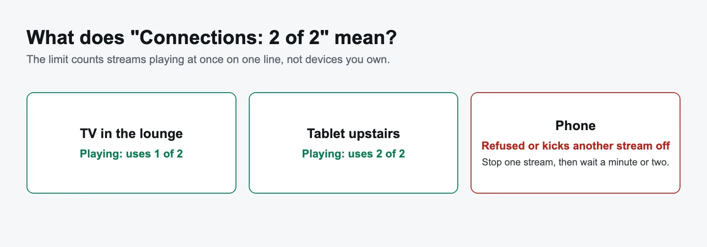
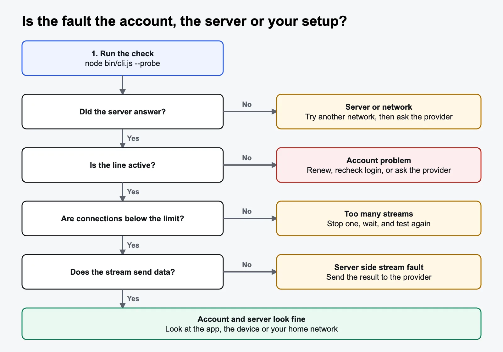
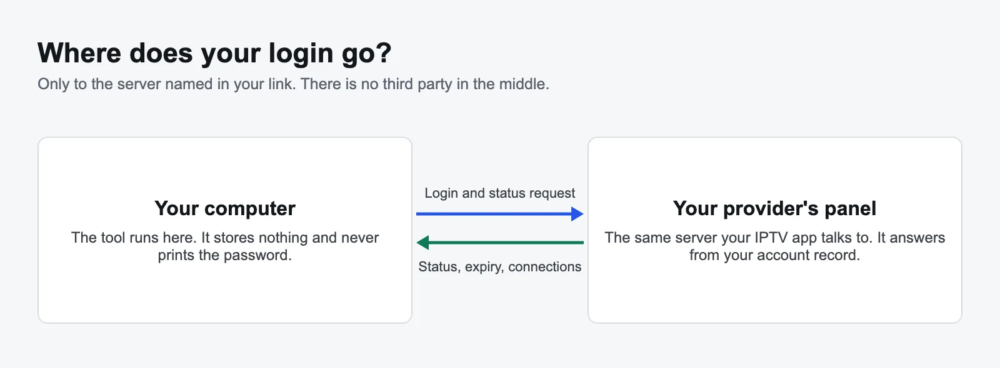

IPTV Line Checker
How do I check my IPTV line? Run this free tool on a computer and paste your M3U link or Xtream Codes details. It asks your provider's server for your account record, then shows whether the line is active, when it expires, how many connections are in use and, with --probe, whether a live stream sends data. That tells you if a fault is your account, the server or your own setup.

How do I run the IPTV line checker?
You need a Windows, Mac or Linux computer with Node.js version 20 or later. The tool has no other dependencies. You do not need any coding knowledge, only the five steps below.
- Install Node.js. Download the LTS version from nodejs.org and accept the defaults.
- Download the tool. Get the ZIP file and extract it.
- Open a terminal in that folder. On Windows, open the extracted folder, right click an empty space and choose Open in Terminal. On a Mac, right click the folder and choose New Terminal at Folder. If that option is missing, turn it on in System Settings under Keyboard, Keyboard Shortcuts, Services.
- Start the check. Type the command below and press Enter.
- Paste your link when it asks, then press Enter. The result appears within seconds.
node bin/cli.js --probeIf you have Git installed, either of these does the same job:
# Run it without keeping a copy
npx github:televoiptv/iptv-line-checker --probe
# Or clone the source
git clone https://github.com/televoiptv/iptv-line-checker.git
cd iptv-line-checker
node bin/cli.js --probeThe tool asks for your link rather than taking it as part of the command, so your password stays out of your shell history. The link does stay visible on screen after you paste it, so close the terminal if anyone else can see it.
Can I run it on a Fire Stick, phone or smart TV?
No. It needs Node.js, so use a computer. That still gives you a useful answer, because your expiry date, status and connection limit are held on the server, not on your TV. Stream results can differ, because a computer may reach the server differently from your TV. For the closest match, use the same home network.
Why is it not a website?
A web page on a secure HTTPS site cannot directly call most IPTV panels, because they use plain HTTP and browsers block that. Online checkers get around this by sending your login through their own server. Running the tool on your computer avoids that middle step.
What does each result mean?
If the server answers, the tool shows one of the results in the first table. If it cannot get an answer, it shows one of the messages in the second table.

When the server answers
| Tool message | What it means | What to do |
|---|---|---|
| The line is active. | The server accepted the login and the account is in good standing. | If it still fails in your app, see common faults. |
| The line has expired. | The status says expired, or the expiry date has passed. | Renew with your provider. Reinstalling apps will not help. |
| The provider has banned this line. | The provider blocked the account. Sharing a login beyond its limit is a common reason. | Ask the provider why. |
| The provider has disabled this line. | The account is switched off, possibly for a short time. | Ask the provider why. |
| The line is not active. | The server reported some other status. | Ask the provider what the status means. |
| The server rejected this username and password. | The login does not match an account on this server. | Recheck for typos and extra spaces. If you copied it correctly, ask whether your details or server changed. |
When the check cannot finish
| Tool message | Likely cause | What to do |
|---|---|---|
| No login found in that link. | The link has no username and password. Short links and portal URLs do this. | Paste the full link, or build one as shown below. |
| The server did not answer in time. | The server is slow or overloaded, or something on the route is dropping traffic. | Try --timeout 30, then test from another network. |
| Could not connect to the server. | Wrong address or port, server down, or the network is blocking it. | Check the address and port, then try another network. |
| The server did not answer like an Xtream Codes panel. | The server replied, but not with account data. It may be another panel type. | This tool cannot read that panel. Ask the provider for your status. |
| The server answered with HTTP 503. | The number varies. 5xx codes mean a server side fault. 404 usually means the address is wrong or the panel has no Xtream API. | Wait and retry for 5xx codes. Check the address for 404. |
Stream test messages
The --probe option only runs when the line is active. It asks for the first live channel and reads the first bytes.
| Tool message | What it means |
|---|---|
| Sending data | The server sent video data for that channel. Your account can stream. |
| The line has no live streams to test. | The account has no live channels attached. Ask the provider to check your package. |
| The stream connected but sent no data. | The server accepted the request but sent nothing. That channel may be down. |
| The server answered with HTTP 403. | The server refused the stream. You may be at your connection limit, so stop other streams and retest. The number can vary. |
| The server did not answer in time. / The stream test failed. | The stream could not be read. Retest, then send the result to your provider. |
Where do I find my M3U link or Xtream Codes login?
Your provider gives you these details when you sign up, usually by email or message. If you cannot find them, look in your IPTV app's playlist or account settings, because many apps show the server and username there. If not, ask your provider to send them again.

Only have a server, username and password? Paste them into this pattern and use the result as your link. Keep your server's own port number.
http://YOUR-SERVER:PORT/get.php?username=YOUR-NAME&password=YOUR-PASSWORDThe tool also accepts a player_api.php link and a single stream link, such as http://tv.example:8080/live/name/pass/123.ts. It cannot read short links such as bit.ly addresses, because they do not contain a login.
What is the difference between M3U, Xtream Codes and a MAC portal?
All three are ways of connecting an app to an IPTV service. An M3U link is a playlist, an Xtream Codes login is an account, and a MAC portal ties the service to one device.
| M3U link | Xtream Codes | MAC or Stalker portal | |
|---|---|---|---|
| What you enter | One long URL | Server, username, password | Portal URL and device MAC address |
| What it is | A text list of channels and their stream addresses | A login for a panel API that apps can query | A login tied to one device's address |
| Typical use | Almost any IPTV player | Apps with separate live, film and series sections | MAG boxes and apps that emulate them |
| Updates | App must reload the list | App asks the panel each time | App asks the portal each time |
| Works with this tool | Yes, if the link has a login and the panel is Xtream compatible | Yes | No |
"Xtream Codes" began as the name of one panel product. Today it mostly describes a login format that many panels still use, so an Xtream login can work even if your provider uses different software.
How do I check when my IPTV subscription expires?
Look at the Expires line in the result. It comes straight from the server, so it is more reliable than a date you were told at sign up.
The date uses a format called ISO 8601 and is in UTC, shown by the Z at the end. For example, 2027-03-01T00:00:00.000Z means midnight UTC at the start of 1 March 2027. In the United States, that is still the evening of 28 February.
"No expiry date" means the server did not give a date. It does not always mean the line lasts forever, so confirm the term with your provider. "Trial: Yes" means the panel has marked it as a trial account, which usually has a short end date.
What does the connection count mean?
Connections are the streams playing at the same time on your line. The result "1 of 2" means one stream is in use and your limit is two. You can usually install the app on more devices than your limit, as long as they don't all play at once.

- Connections shown when nothing is playing: an app that closed badly can hold a connection for a short time. Wait a few minutes and run the check again. Some panels take longer.
- Still shows a connection you don't recognise: your login may be in use somewhere else. Ask your provider to change your password.
- Running the stream test:
--probeuses one connection briefly. On a full line it may fail, so stop other streams first.
Why is my IPTV not working?
Most IPTV faults fall into three groups: the account, the server or your own setup. Run the check first, because it rules out whole groups in seconds and could save you hours of reinstalling apps.

If the check passes but something still goes wrong on your TV, look up the symptom here.
IPTV keeps buffering or freezing
- Run a speed test on the device itself, not your phone. As a rough guide, allow about 10 Mbps for each HD stream and 25 Mbps for each 4K stream.
- Use an Ethernet cable if you can, or the 5 GHz Wi-Fi band. Fire Stick and TV Wi-Fi is often the weak point.
- Restart the router and the device, then stop anything else using the connection.
- Note whether all channels buffer or only one. One channel points to that channel's source. All channels at the same time of day, often at peak evening hours or during big live events, points to server load or your network.
- Try a lower quality version of the channel, or switch the stream format in your app between TS and HLS.
The channel list is empty or will not load
- Reload or update the playlist in your app. Old copies are a common cause after a provider changes something.
- Check the app's server address and port match your link exactly, including
http://. - Remove the playlist and add it again, or clear the app's cache.
- Very large M3U lists can overwhelm older devices. If your app supports Xtream login, use that instead.
The TV guide (EPG) is blank or wrong
- EPG is a separate data feed, so channels can play even when the guide is empty.
- Update the EPG in your app settings, then allow time for it to download.
- Xtream panels often offer a guide at
http://YOUR-SERVER:PORT/xmltv.php?username=YOUR-NAME&password=YOUR-PASSWORD. Add it as the EPG source if your app needs one. - If the times are off by an hour or more, check your device's time zone and the app's EPG time shift setting. This often happens after the clocks change.
Authentication failed in my app
If the tool says the line is active with the same details, the login is fine, so the problem is in the app. Retype the details by hand, watch for confusion between O and 0 or l and I, and remove any space at the end. Then check that the server address in the app is the current one.
Black screen, or picture with no sound
- Change the player or decoder in your app's settings. Try software decoding, or another built-in player.
- Try other channels. If only one is affected, the fault is probably that channel, not your setup.
- No sound on some channels usually means your device cannot decode that audio format. Switching decoder often fixes it.
It works on one device but not another
Your account is fine, so compare the two devices. Update the app on the failing one, check its date and time are correct, and copy the working login across exactly.
It works on mobile data but not on home Wi-Fi
The difference is your home network or broadband provider. Restart the router first. If it still fails, your broadband provider may be filtering that server. In some countries, broadband providers must block servers linked to unlicensed streams by court order. Your IPTV provider should be able to tell you if a server change is needed.
Is it safe to paste my IPTV link?
With this tool, your login goes only to the server named in your link. The tool runs on your computer, stores nothing and never prints your password. You don't have to take that on trust: the request code is short and public.

- Treat your link like a password. Anyone who has it can use your line, which can fill your connections or get it banned.
- Be careful with online checkers. A website has to handle your login on its own server, so you are trusting whoever runs it.
- Plain HTTP is not encrypted. Many panels only offer HTTP, so your login can travel unencrypted, as it already does in your IPTV app. The tool does not change this.
- Hide details when asking for help. Remove your server address and login before you post a result online.
What can't the checker tell you?
- It can't prove every channel works. The stream test covers the first live channel only.
- It can't measure quality. "Sending data" means data arrived. It does not test buffering over time, picture quality or speed.
- It can't test your TV or app. It runs on your computer, so a pass does not rule out a problem on the device.
- It can't check MAC portals. It only works with Xtream Codes compatible panels. A plain playlist URL with no login can't be checked.
- It reports what the server says. If a panel's data is wrong, the result will be too.
- It can't check many lines. It takes one line at a time, is only for lines you own, and bulk checking will not be added.
Is IPTV legal, and does this tool show that?
IPTV is just a way of delivering TV over the internet, and many licensed services use it. Whether a particular service is legal depends on whether it has the rights to what it shows. This tool does not test that. An active result means a server accepted your login, not that the service is licensed. The tool does not include, list or supply any streams.
Technical reference
| Option | Meaning |
|---|---|
--probe | Also test the first live stream. This uses one connection briefly. |
--json | Print JSON for scripts. |
--timeout <s> | Seconds to wait for each step. The default is 10. |
--help | Show help. |
Exit codes are 0 active, 1 not active and 2 could not check. To run it without a prompt, set the IPTV_LINE environment variable. The account check calls player_api.php and reads auth, status, exp_date, is_trial, active_cons and max_connections from user_info. The stream test calls get_live_streams, then reads the first bytes of /live/<user>/<pass>/<id>.ts.
{
"ok": true,
"verdict": "active",
"expiresAt": "2027-03-01T00:00:00.000Z",
"isTrial": false,
"maxConnections": 2,
"activeConnections": 1,
"server": "tv.example:8080",
"stream": { "ok": true }
}It also works as a library:
import { parseLine, checkLine } from "./src/index.js";
const line = parseLine("http://tv.example:8080/get.php?username=me&password=secret");
console.log(await checkLine(line));Frequently asked questions
Is the IPTV line checker free?
Yes. It is free and open source under the MIT licence, with no sign up, adverts or account.
How do I check if my IPTV line is active?
Run the tool, paste your M3U or Xtream Codes link, and it shows the status and expiry date the server reports.
Can it tell me my IPTV expiry date?
Yes, if your provider's panel is Xtream Codes compatible and reports a date. The tool shows it on the Expires line in UTC.
Does it work with an M3U link?
Yes, if the link contains a username and password and the panel is Xtream Codes compatible. A plain playlist link with no login cannot be checked.
Does it work with MAC address or Stalker portal logins?
No. It only works with M3U links and Xtream Codes logins on compatible panels.
Where does my login go?
Only to the server named in your link. The tool stores nothing and never prints the password.
Can it check many lines at once?
No. It takes one line at a time and is only for lines you own.
Will running it use one of my connections?
The account check does not start a stream. The stream test with --probe uses one connection for a moment.
Can it check whether a playlist has working channels?
Only partly. The stream test checks the first live channel, so it cannot prove that every channel works.
Why does the line show as active when my TV won't play anything?
Active means the account is in good standing. The fault is then more likely to be the app, the device, your home network or a server problem affecting streams. Use the stream test and the troubleshooting steps on this page.
Does the tool give me channels or a free IPTV line?
No. It does not include or list any streams. It only checks a line you already have.